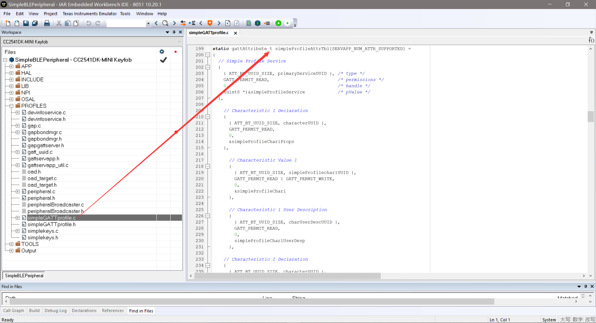

BLE Protocol Stack
TI BLE协议栈
主要阅读参考文章第五章
Profile是一个保存当前定义的一些信息的数组，和CANOpen里的思路是类似的。
参考文档
C:\Texas Instruments\BLE-CC254x-1.4.2.2\Documents\TI_BLE_Software_Developer's_Guide.pdf
Generic Access Profile（GAP）
GAP层主要处理连接功能：
设备访问模式；
设备发现；
链接建立；
链接中断；
数据安全方面的功能；
设备配置；
GAP abstraction（GAPRole）
GAP层源代码是不开放的；
应用层和配置直接访问GAP API也是可以的；
GAPRole层是GAP层的抽象层，更易于使用；
通过配置设备，GAP层一般处于以下四种角色之一：
广播：发广告；
观察：扫描广告；
外设（Peripheral Role）：从设备；
中心（Central Role）：主设备；
Gap Bond Manager (GAPBondMgr)
The GAPBondMgr profile handles the initiation of security features during a BLE connection.
相当于一次认证，以后就可以直接启动，不需要再次认证了；
功能是可选择：
不需要配对；
需要配对
需要配对、认证；
Generic Attribute Profile (GATT)
Whereas the GAP layer handles most of the connection-related functionality, the GATT layer of the BLE Protocol Stack is designed to be used by the application for data communication between two connected devices.
GAP是处理设备链接得，GAPBondMgr是处理安全链接，GATT是用于数据通信得；
蓝牙配对、认证完成之后，设备只有两种状态，一个设备可能有两种状态：
GATT Server;
GATT Client;
Characteristics是Attributes的集合；
Attributes：
Handle
Type
Permissions
GATT Services: A GATT service is a collection of characteristics, For example, the heart rate service contains a heart rate measurement characteristic and a body location characteristic, among others；
GATT Profile: Multiple services can be grouped together to form a profile；
GATT Services和GATT Profile概念经常互换；
SimpleBLEPeripheral示例中含有四个GATT Profiles:
Mandatory GAP Service: 设备信息，不开源；
Mandatory GATT Service: GATT Server信息，不开源；
Device Info Service：设备硬件、软件、固件版本以及一些其他信息，不完全开源；
SimpleGATTProfileService：用于示例程序的Profile，提供所有的源代码，参考：《5.4.2 GATT Services / Profile》小结解释；

GATT实际上是ATT层的抽象层，和GAPRole一样的角色；
GATT Client和GATT Server是不一样的，模型也不一样；